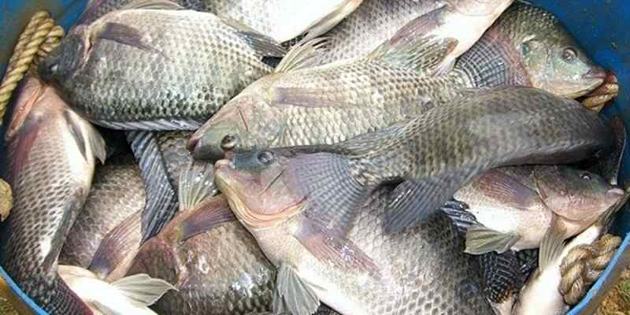

Ikan mujair juga merupakan jenis ikan yang sangat mudah beradaptasi dengan lingkungan. Ikan jenis ini juga sangat cepat dalam berkembang biak. Dalam waktu beberapa bulan saja populasi ikan mujair dapat berkembang dengan pesat. Habitat asli ikan ini berada pada muara sungai dangkal atau juga biasa dibudidayakan di dalam kolam. Namun, untuk membuat sebuah kolam budidaya tentu membutuhkan biaya dan cost yang tinggi. Akan tetapi seiring perkembangan teknologi, budidaya ikan mujair dapat dilakukan pada kolam terpal.

Dalam budidaya perikanan pemilihan indukan akan menentukan kualitas panen yang akan dihasilkan. Dalam memilih indukan tentu hal yang harus diperhatikan adalah kualitas indukan tersebut. Harus baik, sehat, besarnya seragam dengan bobot 100 g. Indukan ikan mujair terdiri dari dua jenis yaitu jantan dan betina. Perbedaan keduanya dapat dilihat dari ciri fisiknya.
Berikut cara membedakan indukan jantan dan betina.
Memiliki 2 lubang pada bagian urogenital, yakni bagian anus dan lubang sperma yang juga merangkap sebagai lubang urine. Ujung sirip berwarna kemerah merahan terang dan jelas. Bagian perut berwarna lebih gelap atau kehitam hitaman.
Memiliki 3 lubang pada bagian urogenital, terdiri dari lubang anus, lubang untuk mengeluarkan sel telur yang terpisah dari lubang urine. Ujung sirip berwarna kemerah-merahan pucat dan tidak jelas. Bagian perut berwarna putih Dagu berwarna putih. Jika perut distriping tidak mengeluarkan cairan.
Tahap selanjutnya dalam budidaya ikan mujair adalah melakukan pemijahan agar indukan dapat menghasilkan benih yang kemudian akan di tebar. Pemijahan dilakukan didalam kolam yang terpisah, berikut tahapan lengkapnya :
1. Buat kolam dengan ukuran 3×4 meter dengan kedalaman 60 cm.
2. Masukkan lumpur halus pada bagian dasar kolam agar ikan mujair bisa membuat sarang dengan mudah.
3. Saat proses pembuahan terjadi, induk betina akan mengumpulkan dan menjaga sel telur didalam mulutnya. Hingga masa inkubasi sampai telur menetas.
4. Inkubasi berlangsung selama 3-5 hari dan kemudian setelahnya telur akan menetas dan menjadi larva.
5. Setelah larva ikan berumur 2 minggu, maka sudah bisa dilepas dari induknya agar dapat mencari makan sendiri.
Selain lebih praktis budidaya ikan mujair di kolam terpal juga akan menghemat biaya. Untuk membuat sebuah kolam terpal dengan ukuran 50x50x100 m2 anda hanya membutuhkan beberapa lembar terpal dan kayu atau bambu. Berikut tahapan dan cara budidaya ikan mujair di kolam terpal:
1. Ukuran kolam terpal bisa disesuaikan dengan kebutuhan dan luas lahan yang anda miliki.
2. Pilih terpal plastik yang tebal sehingga dapat dipakai dalam waktu yang lama.
3. Bentuk kolam persegi panjang, dengan setiap sudutnya diberi kayu yang kuat sebagai penyangga agar kolam tidak roboh.
4. Saat kolam selesai dibuat jangan langsung di isi air, biarkan kolam kering selama 2-3 minggu.
5. Setelahnya lakukan pengapuran dan diamkan selama 3-4 minggu.
6. Baru setelahnya anda dapat mengisi air 3/4 bagian dari tinggi kolam.
7. Biarkan selama satu minggu baru kemudian anda dapat mulai menebarkan benih ikan mujair.
Setelah kolam terpal selesai dibuat dan siap diisi. Maka tahapan budidaya ikan mujair selanjutnya adalah menebarkan benih ikan kedalam kolam. Lakukan penebaran benih saat sore hari dengan kepadatan 400-500 populasi untuk kolam berukuran 50x50x100 cm. Pada beberapa hari awal kemungkinan akan ada beberapa benih ikan yang mati. Namun, anda tidak perlu khawatir jika benih yang mati hanya 3-4 ekor saja perharinya. Namun jika melebihi jumlah tersebut ada baiknya anda segera melakukan tindakan.
Saat benih mulai berada dalam kolam, untuk menyokong kehidupannya tentu dibutuhkan makanan. Oleh karenanya pemberian pakan harus dilakukan secara rutin. Agar lebih efektif lakukan cara dibawah ini :
1. Berikan pakan padat berupa pelet dengan kandungan 28% protein, 30% lemak dan 15% karbohidrat.
2. Pemberian pakan harus dilakukan secara rutin sebanyak 3 kali dalam sehari. Yaitu pada waktu pagi hari, siang dan sore hari.
3. Dalam sekali pemberian pakan untuk populasi 400-500 ekor benih berikan 1-2 kg pakan pelet.
4. Naikkan konsentrasi pakan saat ukuran ikan mulai membesar.
5. Berikan tanaman eceng gondok agar kondisi kolam menjadi lebih sejuk. Selain itu eceng gondok juga bisa berfungsi sebagai makanan tambahan bagi ikan mujair.
Untuk menghindari penyakit yang bisa menjangkiti ikan mujair anda maka kebersihan kolam harus diperhatikan. Salah satu cara paling efektif adalah dengan melakukan penggantian air secara rutin. Lakukan pergantian air kolam setiap 2-3 minggu sekali. Dengan melakukan pergantian air secara rutin maka anda akan membersihkan sisa sisa makanan yang menumpuk. Dengan begitu maka resiko timbulnya penyakit pada ikan mujair dapat diminimalkan.
Ikan mujair akan siap dipanen saat berumur 4-5 bulan setelah ditebar. Ikan dengan kualitas baik dan segar akan memiliki harga jual yang tinggi. Tentunya cara panen harus dilakukan dengan tepat.
1. Saat akan melakukan panen berikan pakan terlebih dahulu untuk menambah bobot ikan.
2. Kemudian kurangi volume air secara perlahan untuk menghindari ikan menjadi stres.
3. Saat volume air mulai berkurang maka anda dapat memanen ikan dengan cara menjaringnya.
4. Kemudian letakkan hasil panen pada wadah yang bersih.
5. Anda bisa menggunakan wadah plastik yang diisi air bersih.
Berikan tambahan oksigen agar ikan dapat bertahan hidup dan tetap segar.
Demikian cara budidaya ikan mujair di kolam terpal paling mudah dan menguntungkan, semoga dapat menambah wawasan dan menjadi inspirasi untuk anda.
sumber : kampustani.com
Leave a comment